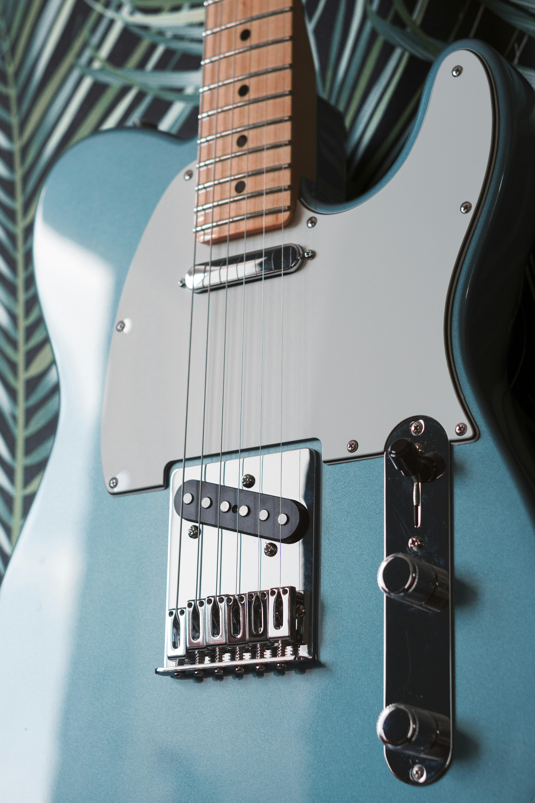

펜더 최초의 양산형 일렉트릭 기타이며, 동시에 스트라토캐스터와 함께 펜더의 대표적인 양대 제품 중 하나이다. 
발매 당시부터 현재까지도 많은 사랑을 받고 있는 스테디셀러 모델이며, 그에 부응하듯 세계 어딜 가나 사람들이일렉트릭 기타를 떠올리면 스트라토캐스터, 레스폴, 텔레캐스터 셋 중 하나의 모습을 떠올린다는 말이 있을 정도로일렉트릭 기타 그 자체를 대표하는 모델 중 하나이다.